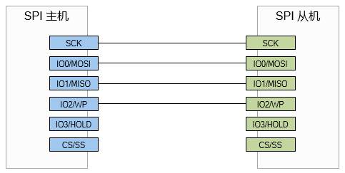

QSPI 使用指南
3 Dec 2024
Read time: 1 minute(s)
Serial Peripheral Interface (SPI) 是一种高速、全双工的同步通信总线。由于其实现比较简单，没有专利限制等，因此在各种器件中得到广泛的应用。 SPI
总线是一种行业事实标准，并没有统一的标准化组织，不同厂商在实际应用中演化出多种工作模式。
| 术语 | 定义 | 注释说明 |
|---|---|---|
| SPI | Serial Peripheral Interface | 串行外设接口 |
| Dual SPI | Dual Serial Peripheral Interface | 双路 SPI |
| Quad SPI | Quad Serial Peripheral Interface | 四路 SPI，又称 QSPI |
| CPOL | Clock polarity | 时钟极性 |
| CPHA | Clock phase | 时钟相位 |
模块特性
SPI 总线接口的应用领域：
-
存储设备：Flash、SD、MMC、EEPROM 等
-
传感器：温度传感器、压力传感器等
-
ADC/DAC
-
Audio Codec
-
LCD 显示屏幕
-
触摸屏幕
-
RTC
-
数字电位计
-
游戏控制器等
ArtInChip SPI 支持：
-
全双工、半双工模式
-
DMA 读写模式
-
CPU 读写模式
-
最高工作频率 100MHz
-
支持四线制模式：标准 4 线 SPI、DUAL SPI、QUAD SPI
-
支持三线制模式
-
数据位传输的模式可配置，CPOL 和 CPHA
标准 4 线 SPI
这是一种四线制的 SPI 连接和工作模式。

DUAL SPI
主机端的 MISO 为 SIO0, MOSI 为 SIO1，常用于 SPI Flash。
QUAD SPI
主机端的 MOSI 为 IO0, MISO 为 IO1, WP 为 IO2, HOLD 为 IO3，常用于 SPI Flash。

三线制 SPI
三线制 SPI 常用于工业控制类场景。这种接线方式，主机端使用 MOSI 作为 DIO。
CPOL 与 CPHA
CPHA 是时钟相位，CPOL 是时钟极性，两者的不同组合是 SPI 数据传输的不同模式。
| CPHA | 说明 |
|---|---|
| 0 | 数据采样在第 1 个边沿，数据发送在第 2 个边沿 |
| 1 | 数据采样在第 2 个边沿，数据发送在第 1 个边沿 |
| CPOL | 说明 |
|---|---|
| 0 | 空闲状态时，SCK 为低电平 |
| 1 | 空闲状态时，SCK 为高电平 |
| Mode | 值 | 说明 |
|---|---|---|
| 0 | CPOL=0, CPHA=0 | 空闲时，SCK 处于低电平数据采样在上升沿，下降沿保持 |
| 1 | CPOL=0, CPHA=1 | 空闲时，SCK 处于高电平数据采样在下降沿，上升沿保持 |
| 2 | CPOL=1, CPHA=0 | 空闲时，SCK 处于低电平数据采样在下降沿，上升沿保持 |
| 3 | CPOL=1, CPHA=1 | 空闲时，SCK 处于高电平数据采样在上升沿，下降沿保持 |